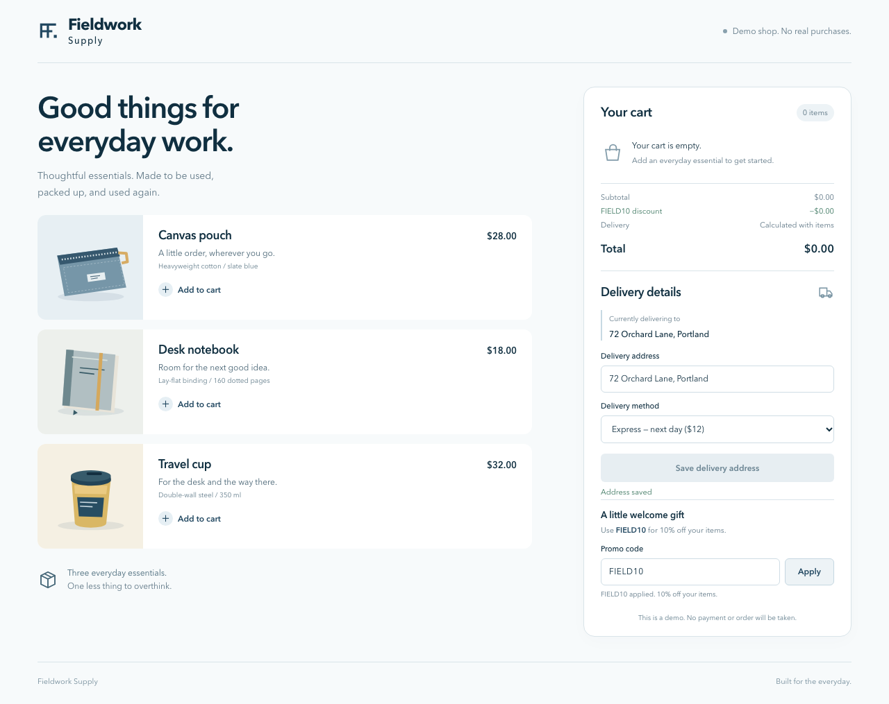
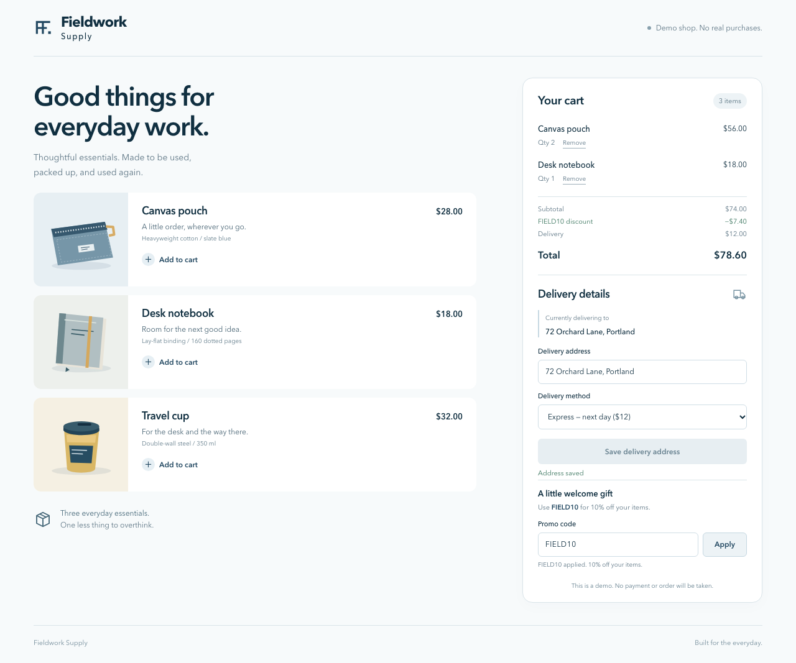

Buggy shopIntended cart-preservation assertion failed.
Corrected controlThe unchanged saved test passed.
Only the base URL changes. Selector and unavailable-target faults stay inconclusive.
Saved-test SHA-256 begins 06f2d8aafbbd4f3c. Known conditions; no model used.

Completed changed-address save.

Canvas pouch ×2, notebook ×1.